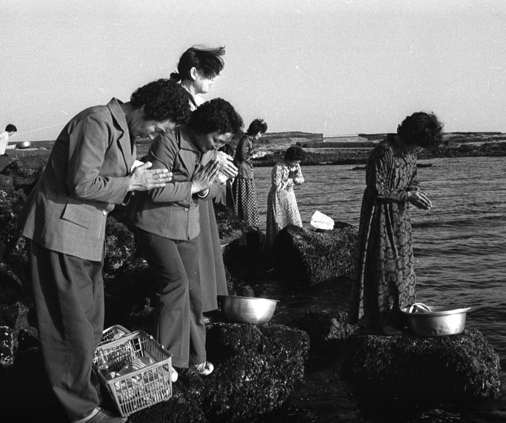
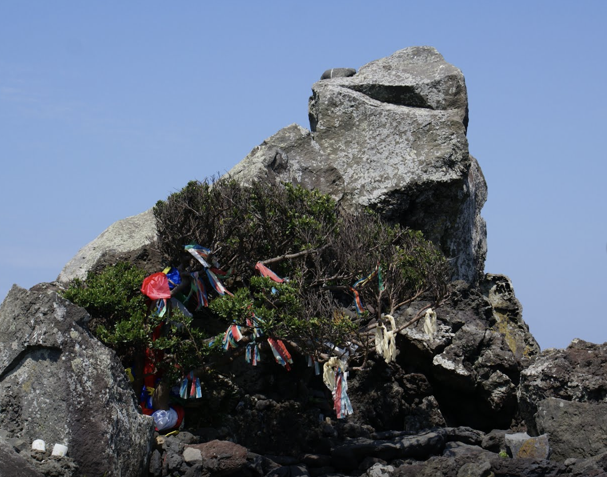
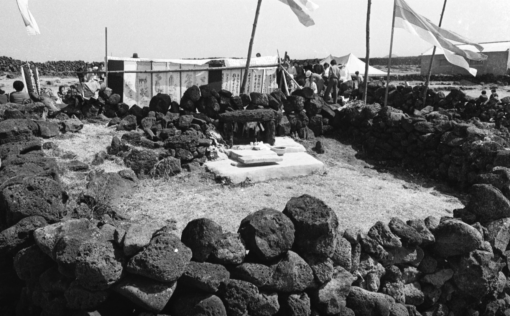

An old haenyeo saying goes: “Earn from Heavens, spend on Earth.” It implies that haenyeo’s diving work is very dangerous. Accordingly, haenyeo always depend on the dragon god, who controls the sea. Haenyeo often visit Haesindang Shrine located on the seaside and hold rituals to pray for safety and an abundant harvest for their diving. In the second month of the lunar calendar, haenyeo hold Yeongdeunggut, a shamanic rite to honor Yeongdeung God. Haenyeo believe that Yeongdeung God provides safety and abundant fish to haenyeo and fishermen, and that the god visits Jeju Island on the first day of the second lunar month. Yeongdeung God sows seeds, including seaweed, abalone, and conch to make the haenyeo’s life abundant, then returns to her home after passing through Udo Island on the 15th of the second lunar month.
The Haesindang is a place that was created to overcome all the difficulties in life by the haenyeos so that they can believe and depend on the shamanistic faith. As such, there are all sorts of stories surrounding it. The ceremonies that are held at the Haesindang are sometimes carried out as a community like the Yeongdeug Gut (exorcism rite) but there are also ceremonies carried out from an individual request. A good example of this is the January Full Moon Exorcism Rite which combines the Singwasaejae ceremony and the ceremony to wish for safe passages on the sea. In the Haesindang (Shrine of the Sea God), there usually are two gods positioned there for worship. Haesindang is also called Donjitdang or Gaedang. In Wu-do's Ha-wu Cow Herd Shrine, three gods are worshipped to pray for the plentiful harvest as well as the safety of the haenyeos and fishermen while they are out to sea.

Title: Jideurim
Creator: Seo Jae Chul
Date: 1976/1976
Location: Jeju Island, Korea
Publisher: Haenyeo Museum

Title: Faith
Creator: Haenyeo Museum
Date: 2012/2012
Location: Jeju Island, Korea
